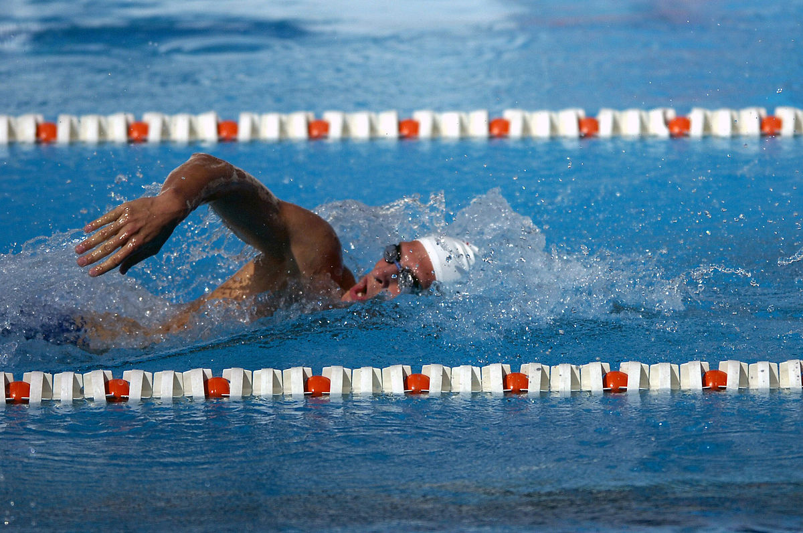

Galería



Nombre: Alan Moreno
Descripción: Estudiante en Ingenieria en sistemas
Impulsada por la arquitectura NVIDIA Ampere, la GPU NVIDIA RTX 3070 ofrece 8 GB de memoria GDDR6, 5888 núcleos CUDA y 46 núcleos RT. Con la capacidad de ejecutar resoluciones 4K, esta tarjeta funciona mejor en 1440p, además de que es compatible con DirectX 12 Ultimate para aprovechar al máximo los juegos más exigentes.
El AMD Ryzen 5 5600G es un procesador con gráficos integrados y 6 núcleos con el que podrás realizar un sinfín de tareas a la vez. Esta CPU es compatible con el socket AM4 y es capaz de alcanzar hasta los 4.4GHz.
Kingston SSD NV2, Capacidad: 1000 GB, Factor de Forma: M.2 2280, Interfaz: NVMe PCIe Gen 4.0 x 4 Carriles, Lectura: 3500MB/s y Escritura: 2100MB/s, Numero de Parte: SNV2S/1000G.
Disfruto mucho estar con mis perros y sacarlos a pasear cuando puedo, también jugar con ellos.
